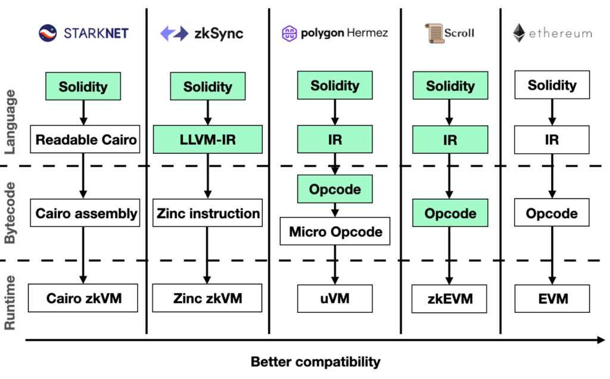
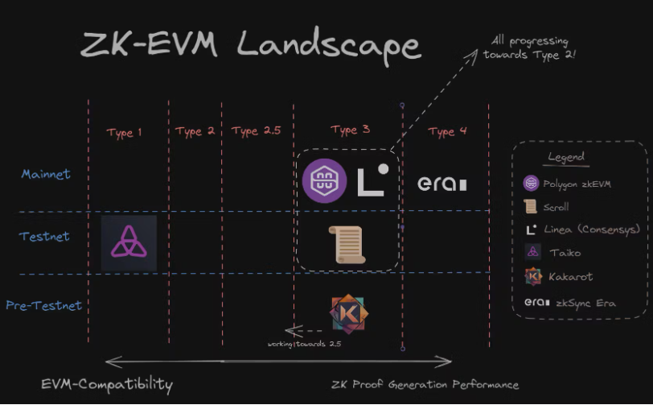

Any comments, contributions, or feedback? Ping me!
Follow @adlrocha Tweet to @adlrocha
- Check how FVM compiles the EVM to Wasm (new runtimes).
- Vitalik: The different kinds of ZkEVM: https://vitalik.ca/general/2022/08/04/zkevm.html
ZKEVMs
  Source: https://blog.jarrodwatts.com/the-ultimate-zk-evm-comparison-guide (slightly updated)
ZKEVM:
- Scroll:
- Taiko: https://github.com/taikoxyz/raiko
General-purpose ZKVMs
- Risc0
- SP1:
- ZKWasm / Delphius Labs: https://delphinuslab.com/2023/01/29/delphinus-tutorial-1-create-your-first-zkwasm-application/
- What is the backend?
- Wasm functions. Creates a circuit. Generate proofs of the execution.
- Code: https://github.com/DelphinusLab/zkWasm
- Circuit: https://jhc.sjtu.edu.cn/~hongfeifu/manuscriptb.pdf
- ZkWasm code explorer: https://explorer.zkwasmhub.com/
Any comments, contributions, or feedback? Ping me!